Next: The algebraic epsilonb-equation (Source Up: Fortran: Module Interface turbulence: Previous: The algebraic kb-equation (Source Contents
INTERFACE:
subroutine algebraiclength(method,nlev,z0b,z0s,depth,h,NN)DESCRIPTION:
This subroutine computes the vertical profile of the turbulent
scale  from different types of analytical expressions. These
range from simple geometrical forms to more complicated expressions
taking into account the effects of stratification and shear. The
users can select their method in the input file gotmturb.nml.
For convenience, we define here 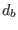 and 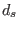 as the distance
from the bottom and the surface, respectively. The water
depth is then given by 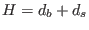, and 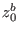 and
from different types of analytical expressions. These
range from simple geometrical forms to more complicated expressions
taking into account the effects of stratification and shear. The
users can select their method in the input file gotmturb.nml.
For convenience, we define here 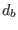 and 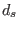 as the distance
from the bottom and the surface, respectively. The water
depth is then given by 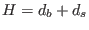, and 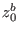 and
 are the repective roughness lengths. With these
abbreviations, the expressions implemented in GOTM are as follows.
are the repective roughness lengths. With these
abbreviations, the expressions implemented in GOTM are as follows.
| 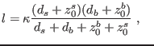 | (173) |
| 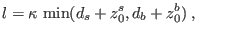 | (174) |
| 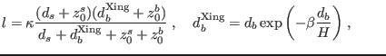 | (175) |
| 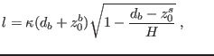 | (176) |
| 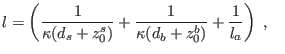 | (177) |
| 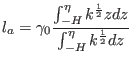 | (178) |
USES:
use turbulence, only: L,eps,tke,k_min,eps_min
use turbulence, only: cde,galp,kappa,length_lim
IMPLICIT NONE
INPUT PARAMETERS:
type of length scale
integer, intent(in) :: method
number of vertical layers
integer, intent(in) :: nlev
surface and bottom roughness (m)
REALTYPE, intent(in) :: z0b,z0s
local depth (m)
REALTYPE, intent(in) :: depth
layer thicknesses (m)
REALTYPE, intent(in) :: h(0:nlev)
buoyancy frequency (1/s^2)
REALTYPE, intent(in) :: NN(0:nlev)
DEFINED PARAMETERS:
integer, parameter :: Parabola=1
integer, parameter :: Triangle=2
integer, parameter :: Xing=3
integer, parameter :: RobertOuellet=4
integer, parameter :: Blackadar=5
integer, parameter :: ispra_length=7
REVISION HISTORY:
Original author(s): Manuel Ruiz Villarreal, Hans Burchard
$Log: algebraiclength.F90,v $
Revision 1.7 2007-01-06 11:49:15 kbk
namelist file extension changed .inp --> .nml
Revision 1.6 2005/11/15 11:35:02 lars
documentation finish for print
Revision 1.5 2005/06/27 13:44:07 kbk
modified + removed traling blanks
Revision 1.4 2003/03/28 09:20:35 kbk
added new copyright to files
Revision 1.3 2003/03/10 09:02:03 gotm
Added new Generic Turbulence Model +
improved documentation and cleaned up code
Revision 1.2 2002/02/08 08:59:58 gotm
Revision 1.1.1.1 2001/02/12 15:55:58 gotm
initial import into CVS
Karsten Bolding 2012-01-24